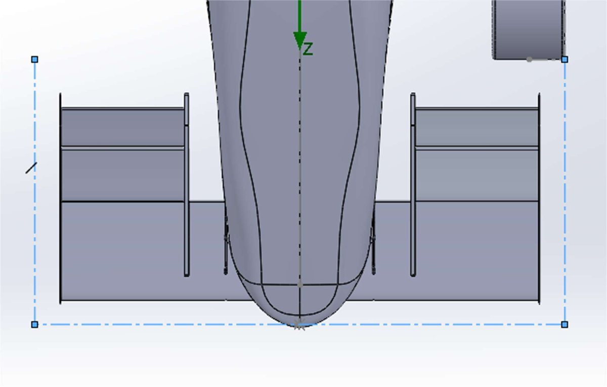
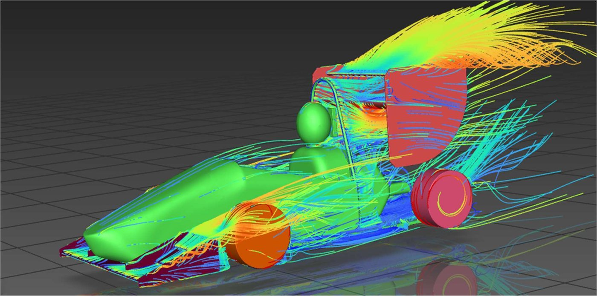

A front wing for a Formula SAE car
On the aerodynamics team of uOttawa's Formula SAE group, I designed the front wing assembly in SolidWorks. The team iterates the car's aerodynamics in ANSYS CFD, checks the predictions against what the car actually does on track, and builds the parts in carbon fibre.


Front wing in SolidWorks
Full-car CFD in ANSYS
Wings, undertray, diffuser, sidepods
Against suspension-travel data
Carbon-fibre layup
Designing inside the rules box
Formula SAE rules fix the space aerodynamic devices are allowed to occupy, and the wings have to package around everything else on the car. I modelled the front wing assembly in SolidWorks within those rules-box and packaging constraints, so every design that went into CFD could actually be built and pass inspection.
The simulation loop
Wings don't work alone: the undertray, diffuser and sidepods all change the flow they see. So the simulations were full-car CFD in ANSYS, iterating on all of those surfaces together. The full car reached a predicted CL of −1.91, or 320 N of downforce at 65 km/h. The front wing alone reached CL −0.800 at CD 0.109.
Checking CFD against the real car
A simulation is only a prediction. Downforce compresses the suspension, so suspension-travel data from the car gives an independent measure of the load. The measured downforce came within 10% of the CFD prediction at 65 km/h, which is the number that makes the rest of the CFD results worth trusting.
From model to carbon fibre
- Mould preparation
- Carbon-fibre layup
- Curing
- Assembly onto the car
Sanity check
A quick hand calculation is the first test of any CFD number. Rearranging the lift equation gives the reference area the results imply:
inputsF = 320 N, V = 65 km/h = 18.06 m/s
ρ = 1.225 kg/m³, |CL| = 1.91
resultA = F / (½ρV²|CL|) ≈ 0.84 m²
That's a plausible reference area for a Formula SAE car, so the downforce and the lift coefficient are consistent with each other.
Front-wing efficiency
About 7.3 units of downforce for every unit of drag. On an autocross-style course, where corners matter more than top speed, that's a trade worth making.
